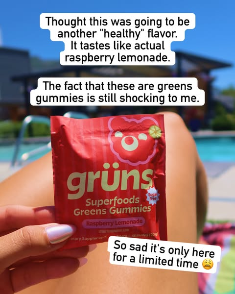
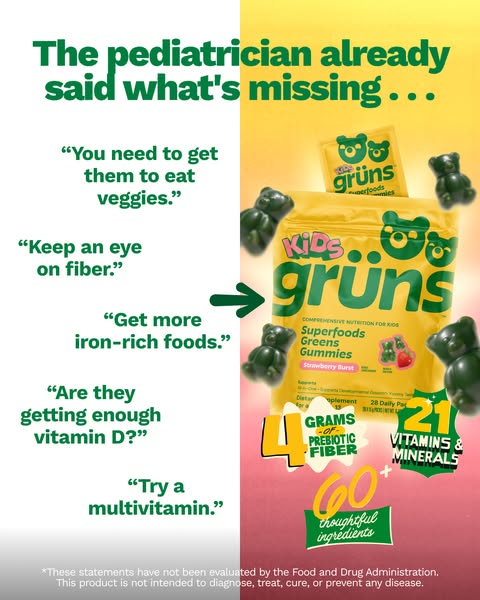
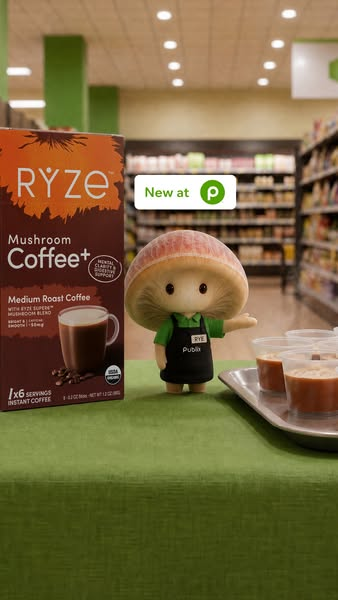
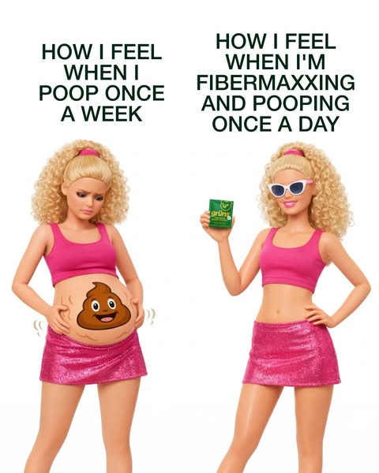

Blind taste test vs full-sugar candy. She picks ours. Bag revealed last.

Pick-a-side: Team Sour / Team Sweet, or mystery flavor reveal with a ? slot. Run one, not both.

"Calling all candy snobs." Candy-brand hero shot, one line under: 70 calories a bag. Tastes like the real thing.

POV hand, sticker labels: "Thought this was another 'healthy' candy. Tastes like actual sour watermelon."

Apology letter: "We're sorry. We made candy that tastes like real candy and forgot to tell you about the fiber."

Office skit: the 3pm drawer raid, coworkers, product reveal last. Behaviour only.
45+ woman tells the "gallbladder out, I eat them for the fiber" story; bag enters at the end.

"Your doctor said more fiber. Not more broccoli." Packshot plus the 26g line.
Three broccoli cups on the table vs one bag; she counts them on camera.

"Diabetic candy aisle" shelf walk, dry humour, 55+ woman. Nothing claimed, she just reads what is there.

"Signs you read every label." Checklist card, 3g sugar as the only fact line, bag last.
"I check before and after everything I eat." Routine shown, nothing claimed, 55+ woman.
Four escalating hiding places; a hand reaches in and gets blocked. No time-stamp.

Two-panel sketch: "quitting candy, attempt #4." Panel 1 the resolve, panel 2 the bag.
"Signs you're a 3pm drawer raider." Checklist, bag last, offer in caption.

Doll two-panel "how I feel before / after the craving," offer caption.

"Leaving these behind in 2026." Crossed-out notebook list: the 3pm candy bar, 45g sugar, "I'll start Monday." Bottom line: eating Shameless instead.

"Good taste ≠ bad for you." Equation card.